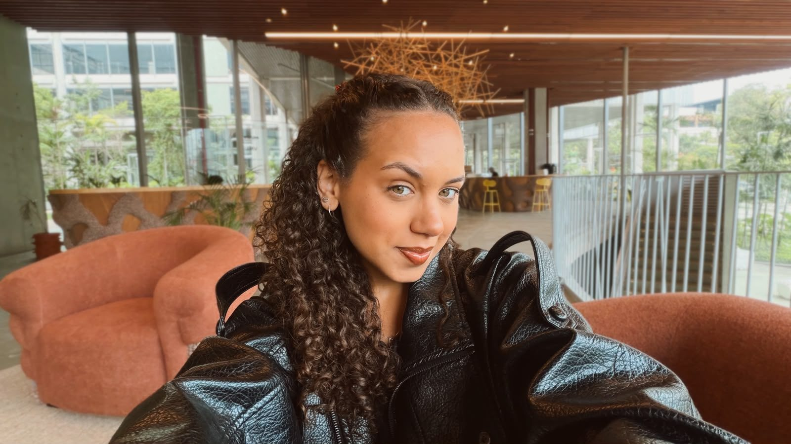
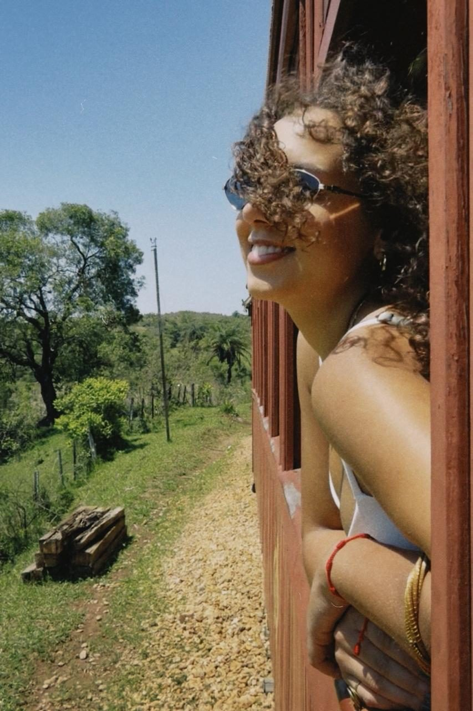
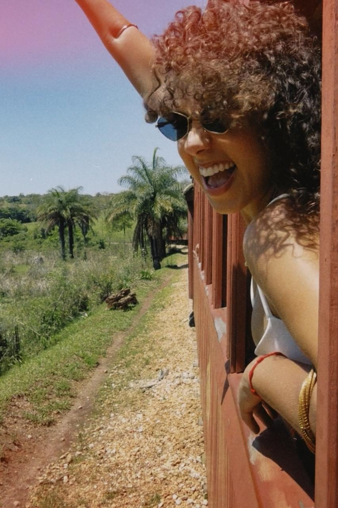
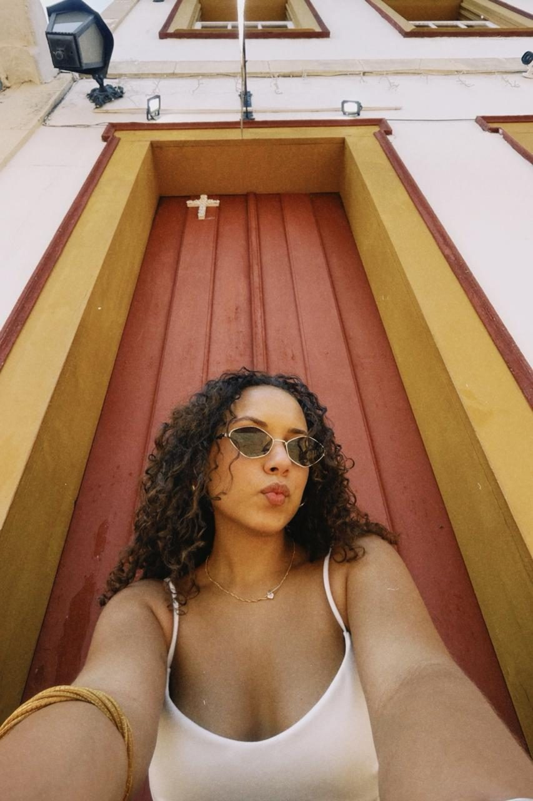
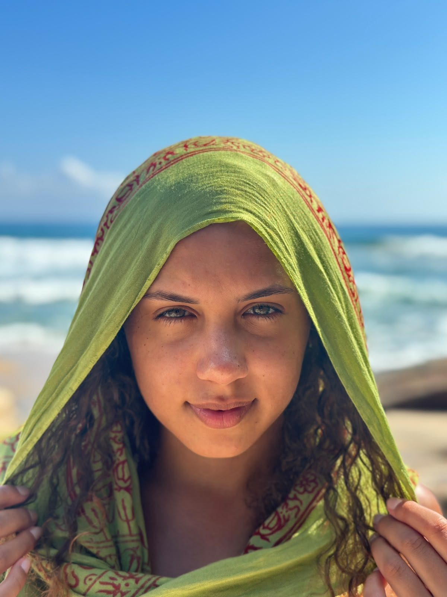
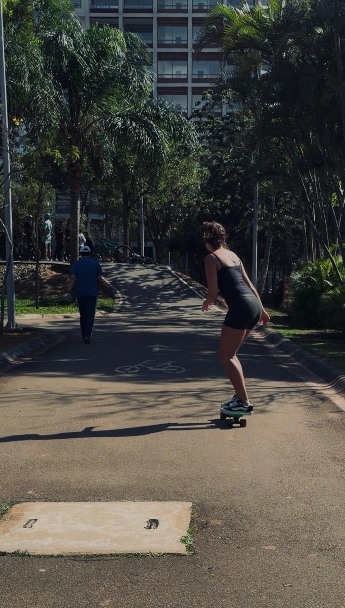
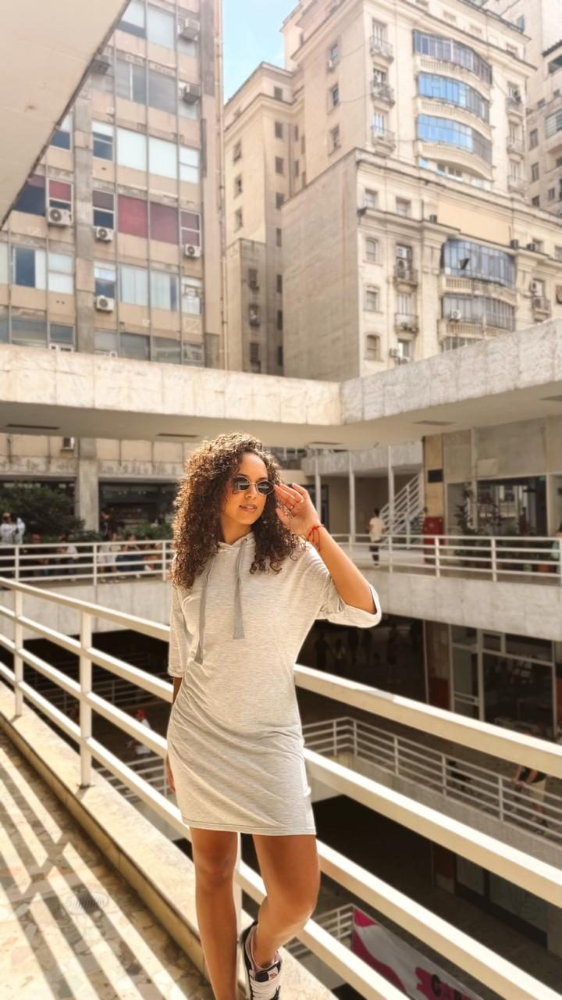

Isabella Kuiawinski , criadora de conteúdo



Oi, eu sou a Isa!
Tenho 25 anos e sou a criadora de conteúdo que compartilha o que vive & como enxerga o mundo.
Eu gosto de registrar todas as minhas vivências, meus treinos, minhas descobertas, viagens, minhas formas de praticar o autocuidado, um evento incrível, uma ideia que tive no meio do dia, uma reflexão que me pega tarde da noite ou algo que decido criar em um dia comum.

Meu olhar
Tudo pelo meu olhar, e é por ele que eu quero me conectar com você.
Fora das telas
Fora das telas, sou lash designer e tenho meu próprio studio de cílios. Também faço peças em crochê, que é meu jeito de desacelerar e criar algo com a minha identidade.
Durante minha trajetória, tive o prazer de trabalhar com algumas marcas que se conectaram com a minha visão de mundo. E agora, espero que possamos criar algo incrível juntos através dessa mesma perspectiva!


O que podemos criar juntos
Conteúdos que conectam marcas, experiências e pessoas através do meu olhar.
O que as marcas aprovaram & o que já fizemos juntos
Histórias, experiências e marcas que fizeram parte da minha jornada.
Marcas que fazem parte da minha história
Meus cupons
Descontos das marcas que eu uso e indico. Toque no cupom para copiar o código.
Vamos criar algo juntos?
Tem uma ideia, um projeto ou uma marca que combina com o meu universo? Vamos conversar!